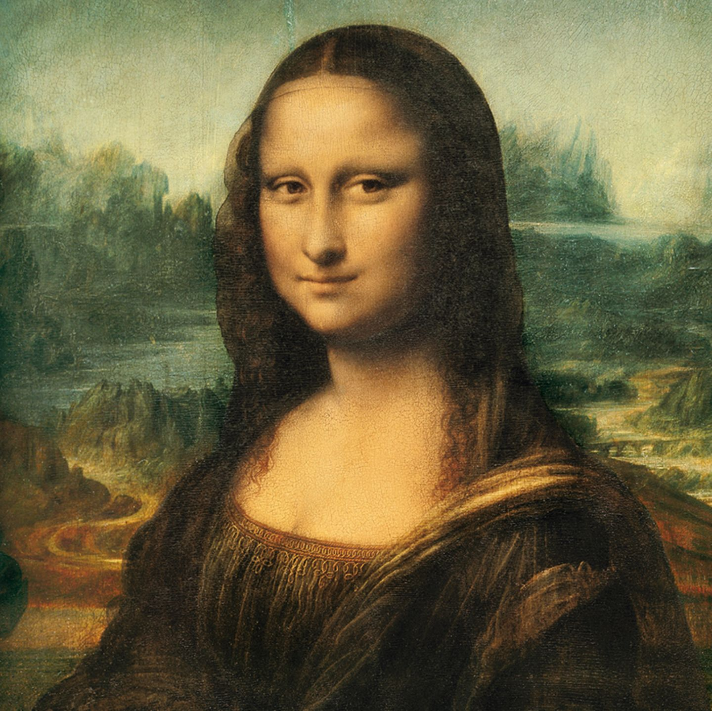
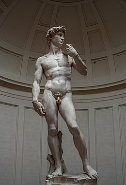
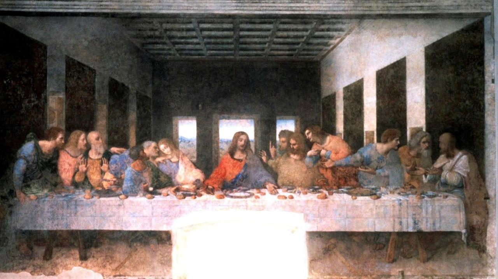
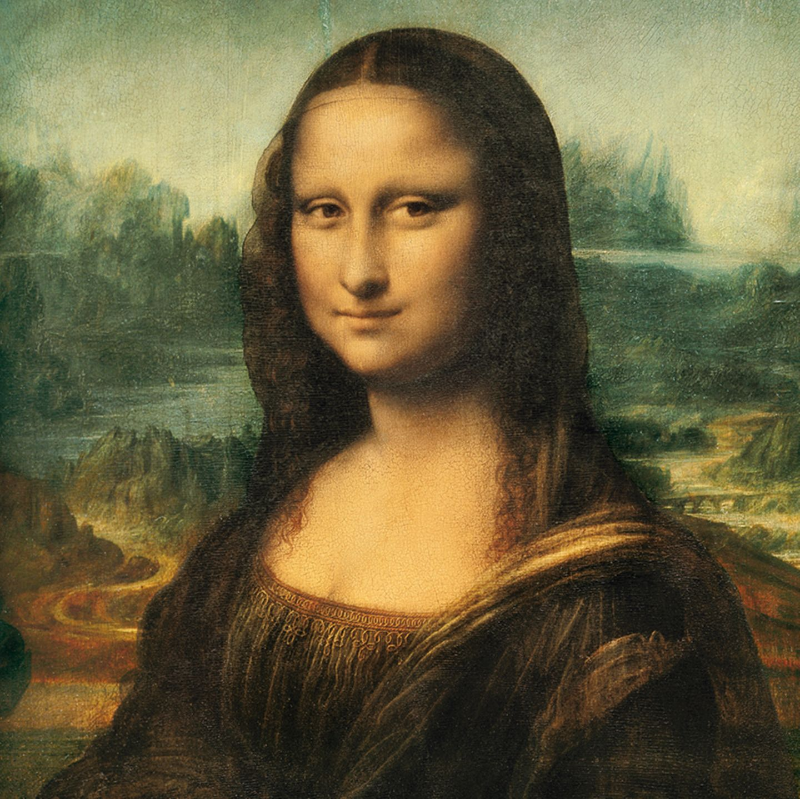
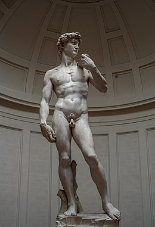
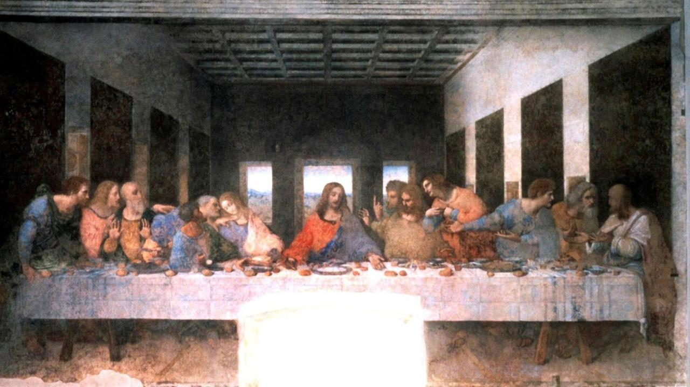

Culture
Arts
Italy has had and continues to have many famous artists for different times! A few of the most important artists of the Renaissanche were:
- Raffaelo Santi. He was painter in Florence and even at the papal court, and he was also the construction manager of the famous St. Peter's Basilica. His most famous work is "The School of Athens", which is is kept in the Stanza delle Segnature in the Vatican. His self-portrait, which dated between 1504 and 1506, is also very famous.
- Another very famous artist was Leonardo da Vinci. He was more than just a painter; he was also an engineer, scientist, theorist, sculptor and architect. His most famous work is the "Mona Lisa", which is known by almost everyone nowadays. Another famous mural is "The Last Supper".
- Michelangelo (di Lodovico Buonarroti Simoni) was also very famous and was also not only a painter, but also an architect, poet and sculptor. Among his most famous works include "The David of Michelangelo", the first monumental statue of the High Renaissance and "The Creation of Adam", a fresco.
 





Architecture
There were also many important and famous architects and architecture in Italy.
Andrea Palladio (Andrea di Pietro), was the most important architect of the northern Italian
Renaissance. His model was the architecture of ancient Rome. Famous are his "Villa Rotonda"
on the outskirts of Vincenza and also "The Palace of Justice" in Piazza dei Signori in Vicenza.
In Puglia there is also "The Castel del Monte", built around 1240-1250. It has an octagonal
shape with also eight octagonal towers and an octagonal courtyard, has no architectural
model and this shape was never used again. It has been a UNESCO World Heritage Site since 1996.
The Colosseum is one of the most famous structures in Italy and is located in Rome. It is the
largest amphitheater built in ancient Rome, and also the largest in the world. It served in ancient times
as a venue for cruel events, now the ruins of the structure is one of the landmarks of the
of the capital city of Rome.

Food
Of course, we can not forget about Italian cuisine. The Italian cuisine is one of the most famous parts of the culture. Very famous are pasta and pizza, but there is much more than that. Famous dishes also include: Risotto, a dish made from rice; Gnocchi, pasta made from (mostly) potatoes; Lasagna, Casserole made from several layers of dough (pasta sheets); Gelato, that is, ice cream; Polenta, a solid brai made from corn semolina; Arancini and Suppli, both fried and stuffed rice balls, being made of a bit different fillings; Panzerotto fritto, they are roughly described pizza pockets; Tiramisù, a delicious dessert made of layers of ladyfingers and a cream of mascarpone, egg yolk and sugar; and much, much more.